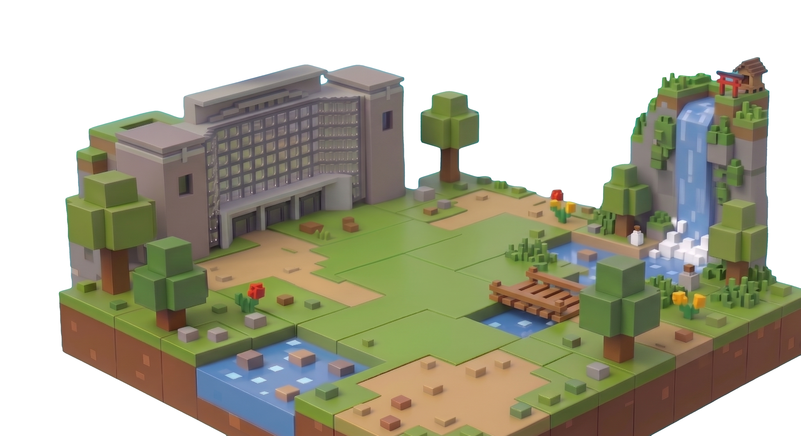

<div class="container">
  <div class="fire-wrapper">
    <div class="particle"></div>
    <div class="particle"></div>
    <div class="particle"></div>
    <div class="particle"></div>
    <div class="particle"></div>
  </div>
  
</div>

<style>
.container {
  position: relative;
  width: 800px; /* 画像サイズに合わせて調整 */
  height: 500px;
  background: #1a0a00; /* 暗い背景だと炎が映えます */
  overflow: hidden;
}

.foreground-img {
  position: absolute;
  width: 100%;
  z-index: 2;
}

.fire-wrapper {
  position: absolute;
  bottom: 20%;
  width: 100%;
  height: 300px;
  display: flex;
  justify-content: center;
  filter: blur(15px) contrast(20); /* これで液体のような質感に */
}

.particle {
  width: 100px;
  height: 100px;
  background: #ff4d00;
  border-radius: 50%;
  animation: fire 2s infinite ease-in;
  opacity: 0;
}

/* 粒子のタイミングをずらす */
.particle:nth-child(2) { animation-delay: 0.5s; background: #ff8000; }
.particle:nth-child(3) { animation-delay: 1.0s; background: #ff0000; }
.particle:nth-child(4) { animation-delay: 1.5s; background: #ffae00; }

@keyframes fire {
  0% { transform: translateY(100px) scale(1); opacity: 1; }
  100% { transform: translateY(-200px) scale(0); opacity: 0; }
}
</style>